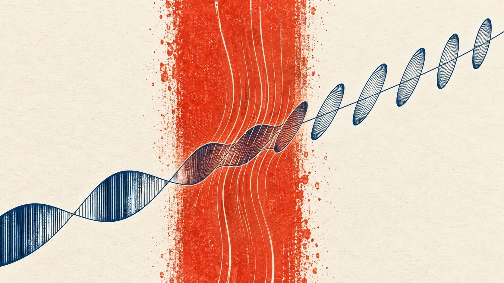
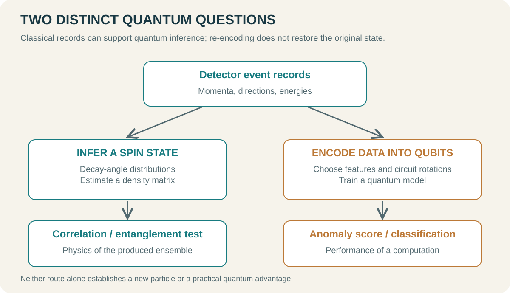
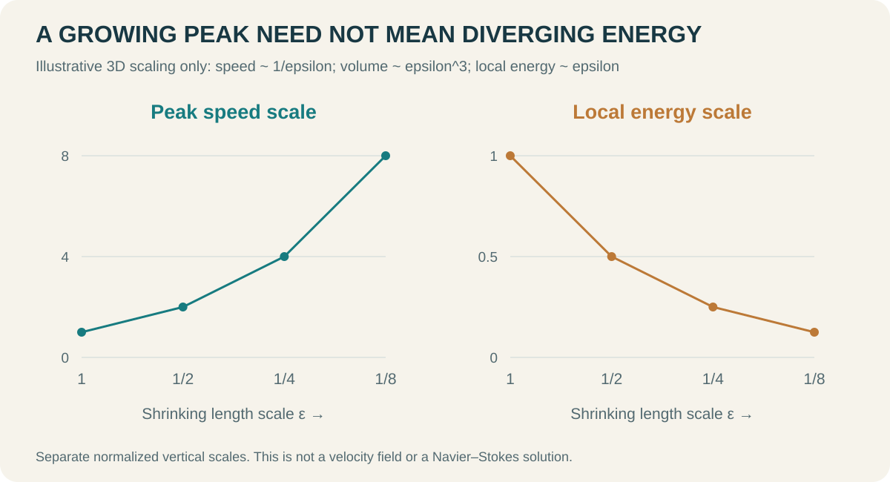
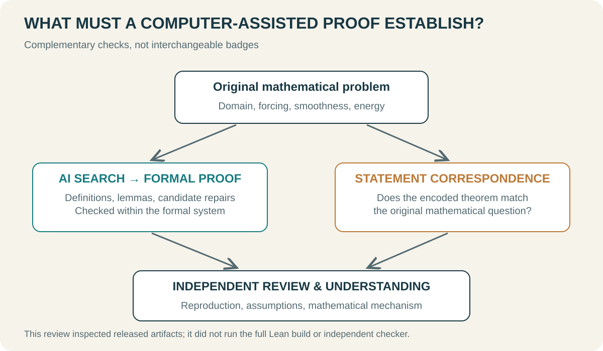
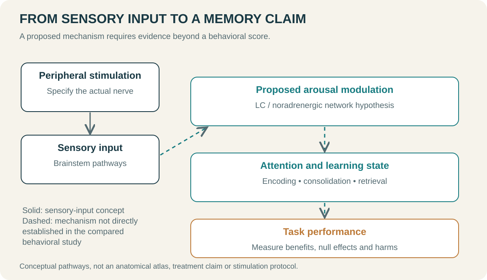

SCIENCE FRONTIERS · 2026.09.11
From the Quantum Vacuum to AI Proofs and Memory
How intense light probes empty space, collider decays preserve quantum information, AI tackles a fluid singularity, and peripheral nerves may influence learning.

A tiny change in the polarization of light can reveal something about empty space. The directions of decay products can carry information about particles that no longer exist. A fluid might retain finite total kinetic energy while its maximum speed becomes unbounded. Sensory input from the face might change how the brain learns. Each question asks how a difficult-to-observe process becomes accessible through a measurable quantity or a precise mathematical statement.
This review takes topics highlighted by New Scientist Weekly as starting points and develops them through separately identified papers and official sources. It is a subject review rather than a newsletter digest: two chapters on quantum physics, one on AI and mathematics, one on the brain, and a short climate note.
Evidence cutoff: 10 September 2026. The New Scientist full articles were unavailable. In particular, the new experiment behind the facial-stimulation story could not be identified. The brain chapter reviews named earlier studies and does not invent the new experiment's design or results. The vacuum and collider papers below are independently selected technical examples, not confirmed identifications of the magazine's featured studies.
01 / QUANTUM VACUUMHow does the vacuum respond to light?
Empty space is not a complete physical description
In elementary electromagnetism, vacuum is the background through which light travels. Maxwell's linear equations allow two crossing light waves simply to superpose. This is enough to explain why intersecting flashlight beams do not visibly bounce off one another.
Quantum electrodynamics, or QED, treats the electromagnetic field and charged particles together. Vacuum is their lowest-energy state. A vanishing mean electric field does not imply vanishing quantum fluctuations: a random variable can have zero mean and nonzero variance. The average field therefore does not exhaust the properties of the vacuum.
The familiar image of particle–antiparticle pairs briefly appearing is a heuristic for quantum calculations. Experiments do not photograph virtual particles as little objects. They compare incoming and outgoing light and ask whether their relationship has changed as predicted by quantum field interactions. “Seeing the vacuum” is best understood here as observing its response.
A strong field creates a tiny optical asymmetry
Electrons in glass respond to light and produce an optical refractive index. QED predicts that vacuum in a strong external electromagnetic field can also respond nonlinearly to a probe. If two probe polarizations acquire different phase velocities, an initially linear polarization becomes slightly elliptical. The difference in refractive index is vacuum birefringence.
A strong pump establishes the interaction conditions; a weaker probe reads their effect. This resembles pump–probe spectroscopy of matter, except that the target contains no deliberately introduced atoms or molecules. Geometry matters: an ideal single electromagnetic plane wave has vanishing electromagnetic invariants. Intensity alone does not specify the relevant interaction. Beam direction, focus and temporal overlap must also be designed.

For a uniform interaction length L, ordinary probe wavelength λ and refractive-index difference Δn, the relative phase is
Suppose the incident polarization is at 45° to the two optical eigenaxes and an analyzer blocks the original polarization. Ideally, the fraction transmitted into the crossed channel is
The small phase shift enters the probability quadratically. More probe photons help, but they do not remove leakage or scattering that can imitate a signal.
Change the polarization phase
An enlarged educational range, not the size of a physical vacuum effect.
This control evaluates ideal polarization optics over an intentionally enlarged phase range. It does not predict the count rate or physical effect size of a laser-vacuum experiment.
What has actually been demonstrated?
A concrete primary-source example is the BIREF@HIBEF collaboration's 2024 letter of intent, combining the ReLaX laser with an X-ray probe at the European XFEL HED instrument. An illustrative estimate gives a polarization-flipped photon fraction around 10⁻¹². This is a proposal and sensitivity estimate, not a detection report. [1]
A complementary route exchanges a brief intense interaction for a long effective optical path. Spector and colleagues tested an interferometric technique in a 19 m optical cavity in 2025. That demonstration used no magnetic field: it tested the measurement method, not magnetic vacuum birefringence itself. [2]
| Approach | How it increases sensitivity | Crucial qualification |
|---|---|---|
| Intense laser and X-ray probe | Strong field and short wavelength | Pulse overlap and polarization background |
| Magnetic field and optical cavity | Long effective optical path | Cavity noise and field-correlated artifacts |
| Photon scattering in heavy-ion collisions | Electromagnetic photon interactions | Collision background and event selection |
Related quantum electromagnetic effects have already been observed. ATLAS reported light-by-light scattering in ultraperipheral lead–lead collisions in 2019. That supports nonlinear quantum electromagnetic interactions, but it is a different observation from laboratory laser-vacuum birefringence. Any claim of a “first view” needs an explicit observable and experimental regime. [3]
Where dark matter enters
A new light particle coupled to photons could, in principle, modify an optical signal relative to the QED prediction. An unexpected polarization change would still require a careful account of residual gas, mirror birefringence, beam geometry and pump scattering before an exotic explanation became persuasive. Wavelength, field-strength and orientation dependence would need to fit a consistent model.
A successful QED measurement would matter even without a new particle. A null result can also constrain a model within the demonstrated sensitivity. Neither outcome amounts to measuring dark energy or photographing a sea of virtual particles.
For readers accustomed to quantum computing, this is another kind of quantum research. Its immediate currency is phase sensitivity, photon statistics and background control, rather than qubit count or circuit depth.
02 / QUANTUM INFORMATION AT COLLIDERSQuantum information after a collision

Classical records can contain evidence of quantum correlations
The Large Hadron Collider, LHC, produces collisions; detectors record positions, energies and arrival times. Those records are classical numbers. That does not mean they contain no information about quantum phenomena. Quantum mechanics predicts probabilities and correlations between measurement outcomes.
Two spins provide a useful example. Each may have no preferred direction when considered alone, while their joint outcomes are strongly correlated. An analysis retaining only separate averages loses information that is present in the joint distribution.
Short-lived particles cannot be held while an experimenter rotates a spin measurement apparatus. Their decay products can instead act as spin analyzers. Reconstructing a top–antitop spin state from decay angles is a form of quantum-state tomography: recovering a state from multiple kinds of observations. Afik and Muñoz de Nova developed this approach for the LHC. [4]
A general pair of spin-1/2 systems can be written as
The density matrix ρ describes the state, the σ matrices represent spin along three axes, B describes individual polarization, and C describes correlations. The important feature is the separation of individual and joint information. The coefficients are estimated from many collision events, not all measured simultaneously in a single event.
Observed entanglement is not a dark-matter detection
CMS reported top–antitop entanglement in a selected near-threshold region in 2024. Its parton-level witness was D = −0.480 with +0.026/−0.029 uncertainty, against a separable-state boundary of −1/3; the reported significance was 5.1σ. These values belong to the specified phase space and analysis. [5]
Entanglement, a Bell-inequality violation and discovery of a new particle are distinct claims. Entanglement rules out a mixture of independent subsystem states. Bell tests impose stronger requirements. A 2026 study of the hierarchy of top-quark quantum correlations explicitly distinguished these categories and found no Bell correlations in the phase space it examined. [6]
Invisible particles can produce an imbalance in the summed transverse momenta of visible objects. Neutrinos and detector effects can do that too. Better use of spin and angular correlations may sharpen discrimination between hypotheses, but entanglement is not by itself a dark-matter fingerprint.
Two different uses of “quantum”
One research program infers the quantum correlations of collision products from classical detector data. Another encodes stored event features into qubits and processes them with a quantum model. The second is quantum machine learning, or QML.

A 2024 quantum-autoencoder paper involving Sarah Malik belongs to the second program. It studies unsupervised searches for beyond-standard-model events through a learned compression model and anomaly score. A new circuit architecture and benchmark are not an experimental particle discovery. [7]
The separate 2025 “1 Particle 1 Qubit” paper offers a more concrete example. A jet is a group of particles traveling in roughly the same direction. Selected particle kinematics are mapped to rotation angles, with one qubit assigned to each retained particle. Entanglement created by the circuit is a computational resource of this encoding, not coherent transfer of the complete collision state into quantum memory. [8]

AUC is the area under the receiver operating characteristic curve. It summarizes how well a score ranks signal relative to background as the decision threshold changes. An AUC of 0.872 is not an 87.2% discovery probability or classification accuracy. Real searches must also consider performance at very low false-positive rates and under severe class imbalance.
The circuit experiments used a classical simulator and at most the ten hardest particles per jet. Fewer trainable parameters do not establish an end-to-end quantum speedup. Encoding, measurement shots, optimization, noise and strong classical baselines all belong in the comparison. [8]
What would make the next result convincing?
A useful follow-up would identify which physical information produces a gain. Holding particle count and input features fixed can help separate a model effect from a data-selection effect. Performance should also survive changes in background modeling and detector conditions.
For tomography, acceptance, background subtraction and unobserved degrees of freedom can bias the inferred density matrix. For QML, input selection can dominate the apparent advantage of an architecture. The programs can inform one another, but their claims need different evidence.
03 / AI & MATHEMATICSWhat does the AI Navier–Stokes proof mean?

From a stirred cup to a global existence question
Stirring a cup produces large flows and smaller vortices that eventually dissipate. The incompressible Navier–Stokes equations describe advection, pressure, viscosity and external forcing while imposing local volume conservation:
Here u is velocity, p is pressure divided by constant density, ν is kinematic viscosity and f is force per unit mass. The nonlinear advection term lets the flow transport itself. Viscosity smooths sharp variations. The mathematical challenge concerns whether smooth starting conditions remain smooth for all time.
A numerical simulation discretizes space and time. Increasing resolution may expose faster motion at smaller scales, but no finite grid alone proves behavior at arbitrarily small scales. Numerical blowup and a mathematical finite-time singularity are therefore different kinds of evidence.
The actual claim published in September
OpenAI released a paper and Lean formalization on 8 September 2026. Theorem 1.1 claims a finite-time blowup construction for three-dimensional incompressible Navier–Stokes, for every positive viscosity, starting from rest under a smooth external force. Total kinetic energy remains uniformly bounded before blowup while the maximum velocity becomes unbounded. The paper treats both whole space and a periodic domain. [9]
With the blowup time normalized to t = 1, the coexistence is
The force is smooth and compactly supported in space and time. The claim is thus more demanding than injecting a singular force by hand. [9]
Forcing is an essential qualification, but not an escape from the official problem. Clay's formulation includes smooth-forcing breakdown alternatives C and D, alongside unforced global-regularity alternatives. A correct result on that route would address an allowed version of the Millennium Problem. It would not justify setting the force to zero and keeping the same conclusion. [10]
| Question | Relation to the announcement |
|---|---|
| Can smooth forcing produce finite-time blowup? | Central claim of the released paper |
| Does unforced 3D Navier–Stokes also blow up? | Not settled by this result alone |
| Can we now predict every turbulent flow? | A different problem |
| Does real water attain infinite speed? | The claim concerns a continuum equation |
| Has the Clay award process concluded? | Not established at the evidence cutoff |
Finite energy can coexist with an unbounded peak
Energy integrates squared velocity over space. A peak can rise while the region containing it shrinks fast enough to keep the integral finite.
Let a concentrated region have length scale ε and representative velocity ε⁻ᵃ. In three dimensions its volume scales as ε³, so its local energy scales as ε³⁻²ᵃ. Taking a = 1 makes peak velocity grow as ε⁻¹ while local energy decreases as ε.

This is not a proof. An arbitrary narrow, fast field may violate incompressibility, require a nonsmooth force, or fail to admit a consistent pressure. A genuine construction must satisfy the equation and regularity conditions simultaneously.
Writing vorticity as ω = ∇ × u exposes the competing mechanisms:
The first term on the right includes three-dimensional vortex stretching and reorientation; viscosity smooths gradients. The scaling example only explains why bounded energy and an unbounded peak are logically compatible. It does not build the required balance of these terms.
What the AI did, and what a checker does
The official account describes an internal model stronger than the publicly available model and a large agent search. For the Navier–Stokes stage, it reports about 10,000 concurrent agents, 88 hours of search and a further 17 hours of formalization and verification. These are author-reported execution figures, not independently audited logs or costs. This review does not combine token totals from different stages or infer a price from them. [11]
A generative model and a proof checker have different roles. The model proposes definitions and lemmas, explores ideas and repairs failures. A checker determines whether a formal proof follows from its stated assumptions and axioms. A broad search can tolerate many wrong ideas if correct candidates can be filtered rigorously. But a perfectly checked proof of a mistranslated statement can still miss the intended problem.

The public repository includes Lean code and a separate statement-comparison and verification procedure. Fixed, inspectable artifacts make independent examination more concrete than a press release alone. For this review, repository documentation and entry files were inspected; the full Lean build and independent checker were not run. [12]
Human understanding remains useful even after formal acceptance. Knowing what makes the construction work can enable extensions, simpler proofs and new estimates. A theorem's conclusion alone does not explain the mechanism behind it.
Credit and the history of the method
Córdoba and Martínez-Zoroa studied forced three-dimensional Euler blowup with rougher forcing. Euler has no viscosity term, so that result cannot be identified with ordinary Navier–Stokes. It nevertheless supplies relevant history for a program that improves forcing regularity and investigates different dissipation regimes. [13]
In a public statement, Tristan Buckmaster described how his collaboration with Levent Alpöge built on that program with LLM assistance to obtain smooth-forcing Euler results. He disputed aspects of the announcement and credit, while explicitly saying he did not know whether their data had been used. OpenAI stated that it had not accessed the unpublished work and could not exclude a contribution from de-identified usage data to training. These are separate parties' accounts; the public material does not establish unauthorized data use or misconduct. [14] [11]
The truth of a theorem and the accuracy of its research history are related responsibilities, but distinct questions. A true result can be presented with inadequate credit; a disputed presentation does not automatically make a theorem false.
Clay's page still marked the problem “Active” at the cutoff. Its award rules include at least two years after publication in a qualifying outlet and general acceptance by the mathematical community. The careful current description is a major solution claim, on an allowed route, released with a paper and formal artifacts—not a completed prize determination. [15] [16]
What other AI-for-science workflows can learn
The transferable lesson is not an agent count. It is a research design that leaves outputs in an independently checkable form. In materials science, those might include structures, inputs, convergence settings and energy calculations. In an experiment, they include calibration, raw signals and analysis code. Fields without a checker as strong as formal logic need more explicit statements of what each verification step establishes.
Cost reporting should also include failed candidates, restarts, tool calls and human selection, not just the successful final run. Problems with cheap verifiers can support a different search strategy from problems in which every candidate requires an expensive physical experiment. As independent mathematical review proceeds, both the proof and the design of the search will be worth studying.
04 / BRAIN & MEMORYCan sensory stimulation change memory?

The new experiment behind the newsletter's face-stimulation story remains unidentified. The results below belong to named 2024 and 2025 studies. No sample size, effect magnitude or duration has been invented for the new story.
Why might the face have anything to do with memory?
Sensory nerves carry touch, pain and temperature information to the brainstem. The brain integrates that information with its current attentional and arousal state. The trigeminal nerve is a major route for facial sensation. “A nerve in the face” is not interchangeable with the anatomically named facial nerve; changing that label changes the target of the research.
Transcutaneous trigeminal nerve stimulation, TNS, delivers peripheral input through the skin. A frequently proposed mechanism involves brainstem pathways and noradrenergic modulation from the locus coeruleus, LC, influencing attention and learning. Anatomical plausibility, however, does not demonstrate that a particular behavioral effect traveled through that pathway. [17]
Noradrenaline is not a simple memory-enhancement switch. Arousal can support learning, while excessive arousal can interfere with concentration. Stimulation before a task and stimulation during it may therefore have different effects. The participant's starting state and the demands of the task also matter.

Neural communication and memory contain several distinct claims
It helps to distinguish encoding, consolidation and retrieval. Encoding acquires and differentiates new information. Consolidation stabilizes it over time. Retrieval makes it available again. Better attention during learning could increase the number of words remembered a week later without changing the rate of forgetting.
“Stronger brain signals” is equally underspecified. It could mean a larger evoked response, a change in an EEG frequency band or greater statistical coupling between regions. Increased correlation does not directly establish stronger synapses; a common input or arousal change can affect both signals.
Plasticity is activity-dependent change in connection efficacy, but indiscriminately strengthening every connection is not a learning strategy. Discrimination, inhibition and timing matter. A chain from signal increase to plasticity to restored memory cannot be established by a single endpoint.
| Observation | Direct interpretation | Additional evidence needed |
|---|---|---|
| Evoked response or EEG change | A neural response changed under those recording conditions | Persistent strengthening of a specific synapse |
| Pupil or salivary biomarker change | An indirect correlate of arousal or modulation | Direct LC activity |
| Immediate word-learning score | Performance on that task | Long-term consolidation or everyday memory |
| Delayed recall and forgetting rate | Retention across time | Transfer to other tasks and populations |
A 2024 result that a positive-only narrative would miss
Arias and Buneo studied visuomotor learning in healthy young adults: 63 participants in a pre-task stimulation experiment and 63 in a separate concurrent-stimulation experiment. Pre-task 60 Hz stimulation produced slower learning than sham or 120 Hz; concurrent stimulation showed no significant group difference. The study measured behavior rather than directly testing the LC mechanism. [17]
It would be incorrect to turn this into “120 Hz improved memory.” Doing better than a condition that performed worse is not equivalent to beating sham. Visuomotor adaptation is also different from word learning or memory for everyday events.
Neutral and adverse effects can still inform mechanism. Dependence on timing or frequency may suggest state-dependent processing, but discomfort, distraction and other physiological explanations require separation. That is a follow-up hypothesis, not a mechanism established by the behavioral result.
A 2025 memory study targeted a different nerve
Arulchelvan and Vanneste studied transcutaneous greater occipital nerve stimulation and word-pair learning in 60 participants across two double-blind experiments. Their abstract reports improved learning and delayed memory but no significant consolidation difference, with EEG and salivary alpha-amylase measurements. The result was checked at abstract level for this review. [18]
The greater occipital nerve is neither the trigeminal nor the facial nerve. This paper therefore cannot be relabeled as proof of facial stimulation. Its relevance is the experimental separation of peripheral input, learning and retention. A salivary biomarker is also not a direct measurement of brain noradrenaline.
| Study | Actual target and task | Boundary |
|---|---|---|
| Arias & Buneo, 2024 [17] | Trigeminal nerve; visuomotor learning | Slower learning after pre-task 60 Hz; no significant concurrent group effect |
| Arulchelvan & Vanneste, 2025 [18] | Greater occipital nerve; word-pair episodic memory | Learning and delayed-memory benefit reported; no significant consolidation difference; abstract checked |
| New newsletter story | Primary experiment not identified | Not assumed to be either study above |
What should the next paper show?
A persuasive memory figure would show participant-level variation, uncertainty and prespecified primary outcomes, not only a favorable mean. Immediate and delayed scores together can help distinguish learning more from forgetting less. Transfer to another task is important for practical meaning.
Controls are especially important when stimulation creates a recognizable skin sensation. Researchers should assess whether sensations were matched and whether blinding held. Prespecified relationships between physiological and behavioral endpoints are more informative than choosing a plausible brain region after an effect appears.
Clinical translation is another step. A short-term result in healthy adults does not establish treatment benefit for children, brain injury, impaired consciousness or dementia. This chapter provides research interpretation, not instructions for self-stimulation.
The interesting possibility is that peripheral input can adjust the brain state in which learning occurs. Testing that possibility requires a clearly specified nerve, task, timing and memory stage.
05 / CLIMATE NOTEEl Niño and the Amazon, briefly
El Niño changes a coupled ocean–atmosphere system, shifting tropical convection and rainfall. Its effects can reach the Amazon, where reduced rainfall may interact with heat, land use and forest degradation.
NOAA's 10 September 2026 discussion assigned a greater than 90% chance to a very strong event during Northern Hemisphere autumn and winter 2026–27. August's Niño-3.4 sea-surface-temperature anomaly was +1.8°C. The first is a forecast probability; the second is a regional monthly observation. [19]
MAAP's Amazon analysis emphasizes fires originating in recently cleared areas and spreading into dry surrounding forests. Dry fuel and human ignition need to be considered together. It also notes limited historical sample size and omission of the tropical North Atlantic temperature contribution from its analysis. [20]
Local rainfall, soil moisture, river level and fire monitoring therefore matter more than the dramatic label “super El Niño.” A high probability of a strong event supports preparation; it does not guarantee the same drought outcome across the Amazon.
Sources, scope and questions to carry forward
Each topic depends on interpreting a signal: background photons in vacuum optics, inferred states in collider physics, exact statements in mathematics, and physiological versus behavioral endpoints in neuroscience. These distinctions identify the next observation or check that would deepen understanding.
- Vacuum: Does the signal follow the predicted intensity, polarization and delay dependence after background controls change?
- Colliders: Does improved discrimination come from spin-sensitive information, input selection or the choice of baseline?
- AI mathematics: Who checked the correspondence to the original problem, reran the complete verification and understood the central construction?
- Memory: Is delayed performance still better after initial learning is matched? Was the proposed mechanism measured directly?
Researchers worth following include Sarah Malik for collider quantum machine learning, Tristan Buckmaster for fluid blowup and its research history, and Sven Vanneste for peripheral stimulation and memory. Their specific methods and comparisons matter more than authority by name.
- BIREF@HIBEF Collaboration (2024). Towards a Vacuum Birefringence Experiment at HIBEF.Proposal / full text
- Spector, Kozlowski & Roberts (2025). Demonstration of an interferometric technique for measuring vacuum magnetic birefringence with an optical cavity.Abstract; prototype without magnetic field
- ATLAS Collaboration (2019). Observation of light-by-light scattering in ultraperipheral Pb+Pb collisions.Published primary experiment / abstract
- Afik & Muñoz de Nova (2020). Entanglement and quantum tomography with top quarks at the LHC.Primary theoretical study / abstract
- CMS Collaboration (2024). Observation of quantum entanglement in top quark pair production in proton-proton collisions at √s = 13 TeV.Primary experimental paper / abstract
- Afik et al. (2026). Experimental characterization of the hierarchy of quantum correlations in top quark pairs.Primary research / abstract
- Duffy et al. (2024). Unsupervised Beyond-Standard-Model Event Discovery at the LHC with a Novel Quantum Autoencoder.Primary QML proposal / abstract
- Bal et al. (2025). 1 Particle – 1 Qubit: Particle Physics Data Encoding for Quantum Machine Learning.Full text, simulation setting and Table I
- OpenAI (2026). Finite Time Blowup for Navier–Stokes.Paper: statement and selected introductory sections; not a full proof audit
- Fefferman / Clay Mathematics Institute. Existence and Smoothness of the Navier–Stokes Equation.Official problem statement
- OpenAI (8 September 2026). Navier–Stokes announcement and research account.First-party claims; execution not independently audited
- OpenAI. NavierStokesAndEuler, commit f9e8bc5b38b6e212696e8a30e3e91517af887bbd.Documentation and entry-file inspection; no Lean build
- Córdoba & Martínez-Zoroa (2023). Blow-up for the incompressible 3D Euler equations with uniform C^(1,1/2−ε) ∩ L² force.Primary predecessor / abstract
- Tristan Buckmaster (September 2026). Public statement on the research and announcement.First-person statement; contested matters attributed
- Clay Mathematics Institute. Navier–Stokes Equation.Status checked 10 September 2026
- Clay Mathematics Institute. Rules for the Millennium Prizes.Official award conditions
- Arias & Buneo (2024). Effects of online and offline trigeminal nerve stimulation on visuomotor learning.Full text; behavioral endpoints and null/adverse results
- Arulchelvan & Vanneste (2025). Transcutaneous electrical stimulation enhances episodic memory encoding via a noradrenaline-attention network, with associated neuroinflammatory changes.Primary abstract via scholarly index; greater occipital nerve, not facial stimulation
- NOAA Climate Prediction Center (10 September 2026). ENSO Diagnostic Discussion.Dated observation and probabilistic outlook; page updates over time
- MAAP. El Niño and Amazon fires: historical patterns and outlook.Monitoring analysis; methods and limitations
Editorial verification record
Primary papers and official statements were prioritized. Source [1] is a proposal, [2] a field-free method demonstration, [5] an analysis of real collision data, [8] a classically simulated quantum-circuit study, [9] a released mathematical solution claim, [18] an abstract-level check, and [19] a dated probabilistic outlook.
Execution costs and logs, the full Lean proof, collider benchmarks and stimulation experiments were not independently reproduced. Five raster illustrations were newly generated as conceptual artwork. Six SVG figures were constructed directly: Figure 3 uses the source table; Figure 4 and the polarization control use the equations shown here. Generated imagery was not used to validate anatomy, apparatus design or fluid data.
The New Scientist links below document topic discovery, not full-text access. No private email addresses, headers or tracking links are included.